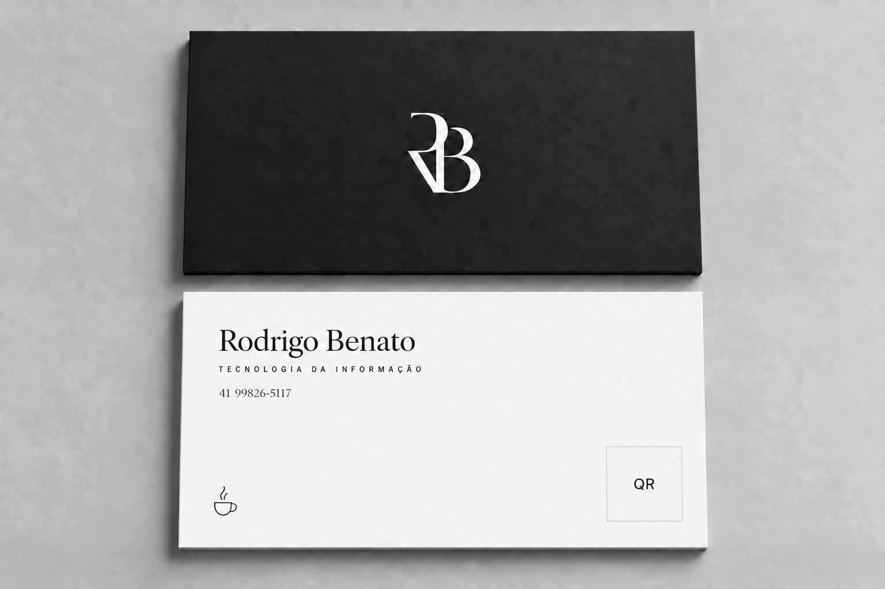

Certificates
Courses that complement my academic studies.
Gemini Enterprise Workshop
Escola de Gestão do Paraná · 2026
Certificate document to be added.

RODRIGO BENATOCourses that complement my academic studies.
Escola de Gestão do Paraná · 2026
Certificate document to be added.